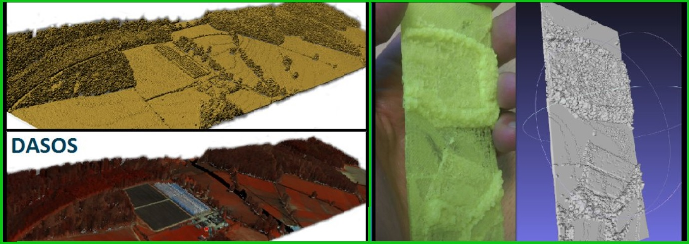

Selected Publications
2022
- A SELECTION OF EXPERIMENTS FOR UNDERSTANDING THE STRENGTHS OF TIME-SERIES SAR DATA ANALYSIS FOR FINDING THE DRIVES CAUSING PHENOLOGICAL CHANGES IN PAPHOS FOREST, CYPRUS
M. Miltiadou, V. Karathanassi, A. Agapiou, C. Theocharidis, P. Kolokoussis, C. Danezis Remote Sensing
- TIME-SERIES ANALYSIS OF LANDSAT DATA FOR INVESTIGATING THE RELATIONSHIP BETWEEN LAND SURFACE TEMPERATURE AND FOREST CHANGES IN PAPHOS FOREST, CYPRUS
V. Andronis, V. Karathanassi, V. Tsalapati, P. Kolokoussis, M. Miltiadou, C. Danezis Remote Sensing
2021
- A COMPARATIVE STUDY ABOUT DATA STRUCTURES USED FOR EFFICIENT MANAGEMENT OF VOXELISED FULL-WAVEFORM AIRBORNE LIDAR DATA DURING 3D POLYGONAL MODEL CREATION
M. Miltiadou, N. D. F. Campbell , D. Cosker, M. G. Grant Remote Sensing
- DO PEOPLE UNDERSTAND AND OBSERVE THE EFFECTS OF CLIMATE CRISIS ON FORESTS? THE CASE STUDY OF CYPRUS
M. Miltiadou, E. Antoniou, C. Theocharidis, C. Danezis Forests
- UNDERSTANDING PHENOLOGICAL CHANGES OF CONIFEROUS FORESTS IN CYPRUS USING TIME-SERIES OF SAR DATA FROM 2015 TILL 2020
M. Miltiadou, C. Theocharidis, V. Karathanassi, A. Agapiou, M. Nikolaidis, C. Danezis
- IDENTIFICATION OF SIGNIFICATIVE LIDAR METRICS AND COMPARISON OF MACHINE LEARNING APPROACHES FOR ESTIMATING STAND AND DIVERSITY VARIABLES IN HETEROGENEOUS BRAZILIAN ATLNATIC FOREST
R.P. Martins-Neto,A.M.G. Tommaselli, N.N. Imai, H.C. David, M. Miltiadou, and E. Honkavaara Remote Sensing
2020
- DETECTING DEAD STANDING EYCALYPT TREES FROM VOXELISED FULL-WAVEFROM LIDAR USING MULTI-SCALE 3D-WINDOWS FOR TACKLING HEIGHT AND SIZE VARIATIONS
M. Miltiadou, A. Agapiou, S. Gonzalez Aracil, D. G. Hadjimitsis Forests
2019
- OPEN SOURCE SOFTWARE DASOS: EFFICIENT ACCUMULATION, ANALYSIS, AND VISUALISATION OF FULL-WAVEFORM LIDAR
M. Miltiadou, M. G. Grant, N.D.F. Campbell, M. Warren, D. Clewley, D. G. Hadjimitsis SPIE Library, Seventh International Conference on Remote Sensing and Geoinformation of the Environment (RSCy2019)
2018
- DETECTION OF DEAD STANDING EUCALYPTUS CAMALDULENSIS WITHOUT TREE DELINEATION FOR MANAGING BIODIVERSITY IN NATIVE AUSTRALIAN FOREST
M. Miltiadou, M. G. Grant, N.D.F. Campbell, M. Warren, D. Clewley, D. G. Hadjimitsis International Journal of Applied Earth Observation and Geoinformation
- DETECTION OF MARINE FRONTS: A COMPARISON BETWEEN DIFFERENT APPROACHES APPLIED ON THE SST PRODUCT DERIVED FROM SENTINEL-3 DATA
M. Miltiadou, C. Papoutsa; V. Karathanassi, P. Kolokoussis, V. Lafon, D. Sykas, A. Sarelli, M. Prodromou, D. Hadjimitsis Proc. SPIE 10773, Sixth International Conference on Remote Sensing and Geoinformation of the Environment (RSCy2018), 1077302
- A NOVEL AUTOMATED METHODOLOGY THAT ESTIMATES THE UNITED NATIOONS(UN) SUSTAINABLE DEVELOPMENT GOAL (SDG) 14.1.1.: INDEX OF COASTAL EUTROPHICATION USING THE COPERNICUS MARINE ENVIRONMENT MONITORING SERVICE (CMEMS)
A. Sarelli, D. Sykas, M. Miltiadou, D. Bliziotis, Y. Spastra, M. Ieronymaki Proc. SPIE 10773, Sixth International Conference on Remote Sensing and Geoinformation of the Environment (RSCy2018), 1077302
- A SEMNATIC REPRESENTATION OF EO DATA FOR IMAGE RETRIEVAL BASED ON NATURAL LANGUAGE QUERIES
M. Polignano, M. de Gemmis, V. Kopsacheilis, M. Vaitis, J. Malig, D. Grether, I. Ioannou, A. Sarelli, V. De Pasquale; S. Samarelli, P. Kolokoussis, K. Karamvasis, M. Miltiadou, C. Papoutsa, O. Regniers, V. Lafon, K. Topouzelis, B. Despotov IProc. SPIE 10773, Sixth International Conference on Remote Sensing and Geoinformation of the Environment (RSCy2018), 1077302
2017
2016
- IMPROVING AND OPTIMISING VISUALISATIONS OF FULL-WAVEFORM LIDAR DATA
M. Miltiadou, NDF Campbell, M Brown, D Cosker, Micheal Grant,Proceedings of the conferece on Computer Graphics & Visual Computing
2015
- ALIGNMENT OF HYPERSPECTRAL IMAGERY AND FULL-WAVEFORM LIDAR DATA FOR VISUALISATION AND CLASSIFICATION PURPOSES
M. Miltiadou, M.A. Warren, M. Grant, M. Brown, The International Archives of Photogrammetry, Remote Sensing and Spatial Information Sciences
